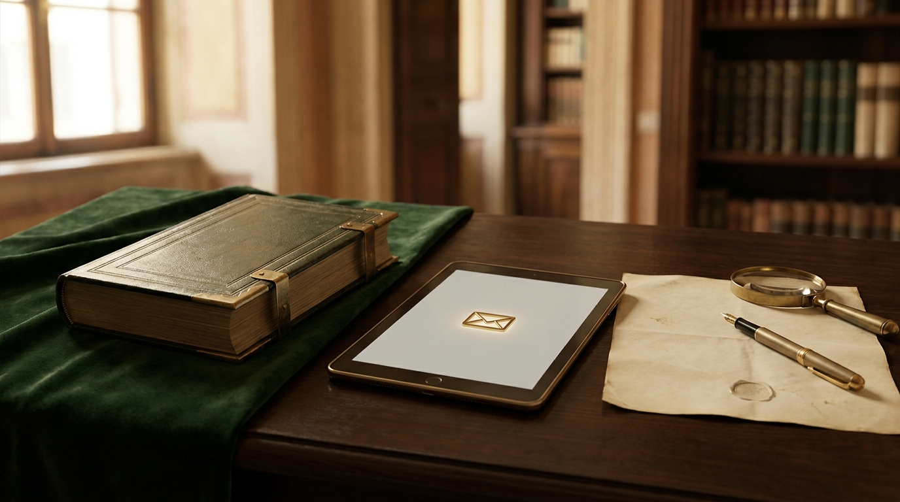

Licenziamento via mail: valido se rispetta la forma scritta
La Corte di Cassazione ha stabilito che il licenziamento comunicato con una semplice mail ordinaria è valido, purché l'atto rispetti la forma scritta richiesta dalla legge. Poco importa che il contratto collettivo preveda canali più formali come la Pec: ciò che conta è la prova della comunicazione scritta. Una decisione che ridefinisce i confini tra forma sostanziale e modalità di trasmissione.

Il caso
Un tecnico manutentore impugnava il licenziamento ricevuto via mail ordinaria, sostenendone l'invalidità perché il contratto collettivo (CCNL) applicato prevedeva forme di comunicazione più garantite, come la posta elettronica certificata (Pec). Secondo il lavoratore, l'uso di un canale meno formale avrebbe reso inefficace l'atto.
La Corte di Cassazione ha respinto questa impostazione. Il punto decisivo non è il *mezzo* con cui il licenziamento viaggia, ma il *requisito di forma* dell'atto: se è scritto, è valido. La mail ordinaria soddisfa pienamente questa esigenza.
Inquadramento normativo
La norma di riferimento è l'art. 2 della legge n. 604 del 1966, che impone la forma scritta per il licenziamento, a pena di inefficacia. La legge richiede dunque che il recesso datoriale sia documentato per iscritto: questo serve a garantire certezza sull'esistenza, sul contenuto e sulla data dell'atto.
La Cassazione distingue con nettezza due profili. Da un lato la forma dell'atto, requisito di validità imposto dalla legge. Dall'altro la modalità di trasmissione, cioè il canale attraverso cui l'atto raggiunge il destinatario. Il primo profilo è inderogabile e di rango legale; il secondo attiene alle modalità pratiche di consegna e può essere disciplinato dal CCNL senza per questo incidere sulla validità del licenziamento.
In altri termini: una clausola collettiva che indica la Pec come canale di comunicazione non trasforma quel canale in un requisito di forma a pena di nullità. Una mail ordinaria che contenga una comunicazione scritta resta un atto scritto a tutti gli effetti.
Implicazioni pratiche
Per il datore di lavoro, la decisione conferma che la mancata osservanza del canale indicato dal contratto collettivo non determina, di per sé, l'inefficacia del licenziamento. Resta però un nodo cruciale: la prova della ricezione. La mail ordinaria, a differenza della Pec, non genera automaticamente una ricevuta di avvenuta consegna opponibile. Chi licenzia deve quindi poter dimostrare che la comunicazione è effettivamente pervenuta al destinatario e in quale data, perché da quel momento decorrono i termini per l'impugnazione.
Per il lavoratore, l'insegnamento è speculare. Contestare il licenziamento basandosi solo sul canale di invio è una strada fragile. La difesa va costruita sul merito: motivi del recesso, rispetto delle procedure, eventuali vizi sostanziali. La forma del messaggio, se scritto, difficilmente offre appigli.
Resta poi aperto il tema delle conseguenze interne. La violazione di una clausola collettiva sul canale di comunicazione può comunque rilevare su altri piani contrattuali, pur non travolgendo la validità del licenziamento.
Cosa fare in concreto
- Conserva ogni traccia della comunicazione. Se invii o ricevi un licenziamento via mail, archivia il messaggio integrale, gli allegati e i metadati relativi a data e orario.
- Verifica la prova di ricezione. Per il datore di lavoro, consigliamo di privilegiare strumenti che attestino l'avvenuta consegna, come la Pec, quando il CCNL la prevede: riduce il contenzioso sui termini.
- Controlla i termini di impugnazione. Dal momento in cui il licenziamento è ricevuto decorrono i termini per contestarlo. Annota con precisione la data di ricezione.
- Valuta il merito, non solo la forma. Concentra l'analisi sulla legittimità sostanziale del recesso: motivazione, procedura e rispetto delle garanzie.
- Fai esaminare il caso prima di agire. Le valutazioni sulla validità dipendono da dettagli specifici del rapporto e del contratto collettivo applicato.
Conclusione
La pronuncia ribadisce un principio di buon senso giuridico: la legge tutela la forma scritta del licenziamento, non un particolare strumento informatico. La mail ordinaria è valida se l'atto è scritto. Il vero terreno di prova si sposta sulla dimostrazione della ricezione e sul rispetto dei termini, dove la scelta del canale conserva tutto il suo peso pratico.
Disclaimer
Contributo informativo a cura di Tamburro & Partners - Avv. Giuseppe Tamburro. Non costituisce parere legale.
Ogni storia di lavoro ha i suoi tempi.
Se gestisci HR e vuoi un confronto su contenzioso, ispezioni o licenziamenti, scrivi allo studio. Ti rispondiamo entro un giorno lavorativo.